Dt. Burak Yıldız
Ağız ve Diş Sağlığı
Bilgilendirme Rehberi
İmplant, estetik diş hekimliği, koruyucu bakım ve dijital diş hekimliği uygulamaları hakkında bilgilendirme.
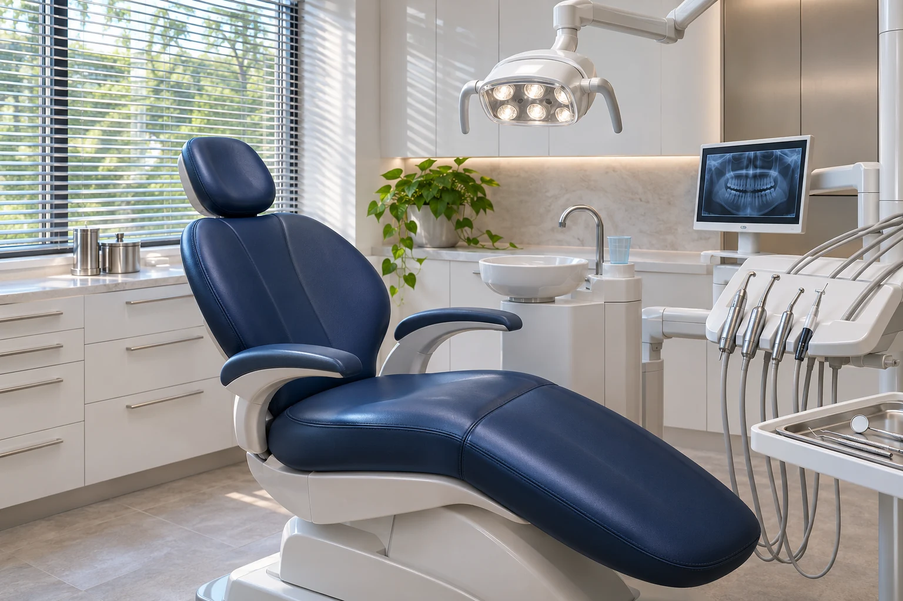
Dt. Burak Yıldız
Değirmiçem / Şehitkamil / Gaziantep
Pazartesi–Cumartesi
09:00–19:00
Ağız ve Diş Sağlığı
Bilgi ve Uygulama Alanları
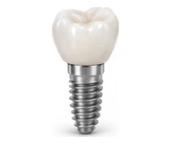
İmplant
Diş implantı, eksik bir dişin yerine yapılan kron, köprü veya protezi desteklemek için çene kemiğine yerleştirilen yapay köktür. Kemik hacmi yetersizse kemik grefti veya üst çenenin arka bölgesinde sinüs lifting değerlendirilebilir.
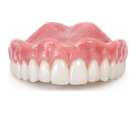
All-on-Four
All-on-Four, bir çenedeki tam ark protezinin dört implantla desteklenmesini esas alan bir yaklaşımdır. İmplant destekli protez seçenekleri, kemik yapısı ve ağız sağlığı değerlendirilerek planlanır.
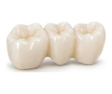
Zirkonyum ve Porselen Kaplamalar
Kronlar, hasar görmüş bir dişin görünen bölümünü örten restorasyonlardır. Zirkonya ve diğer dental seramikler farklı durumlarda kullanılabilir. Dijital ölçü, restorasyonun hazırlanmasına yardımcı olan bir kayıt yöntemidir.
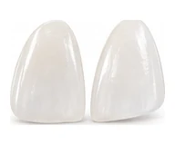
Lamina (Yaprak Porselen)
Lamina, dişin ön yüzeyine uygulanan ince bir seramik restorasyondur. Diş dokusunun durumu ve amaçlanan onarıma göre kompozit estetik dolgu gibi başka seçenekler de değerlendirilebilir.
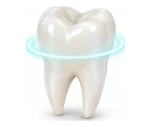
Diş Beyazlatma
Diş beyazlatma, doğal dişlerdeki bazı renklenmeleri azaltmayı amaçlar. Kaplama ve dolguların rengi bu işlemle değişmez. Bazı yüzey lekelerinde profesyonel temizlik ve gerektiğinde diş taşı temizliği ayrı işlemler olarak değerlendirilebilir.
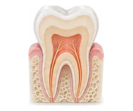
Kanal Tedavisi
Kanal tedavisi, iltihaplanan veya enfekte olan diş özünün çıkarılması ve kök kanallarının temizlenip doldurulması işlemidir. Gömülü diş çekimi, gömülü dişin konumu ve komşu dokularla ilişkisi değerlendirilerek ele alınan ayrı bir işlemdir.
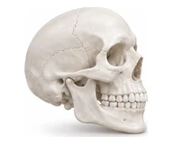
Çene Eklemi (TME) ve Bruksizm
TME, alt çeneyi kafatasına bağlayan eklemdir. Bruksizm, uyanıklıkta veya uykuda diş sıkma ya da gıcırdatma davranışıdır. Dişleri aşınmaya karşı korumak için bazı durumlarda ağız içi plak değerlendirilebilir.
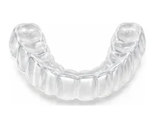
Uyku Apnesi ve Horlama Plağı
Horlama ve obstrüktif uyku apnesi farklı değerlendirmeler gerektirir. Obstrüktif uyku apnesinde tanı, uyku tıbbı değerlendirmesiyle konur. Ağız içi aparey bazı kişilerde değerlendirilir ve hekim ile diş hekimi takibi gerektirir.
Her cerrahi veya girişimsel işlemde sonuçlar kişiden kişiye değişiklik gösterebilir. İşlem öncesinde hekiminizden detaylı görüş almanız önerilir.
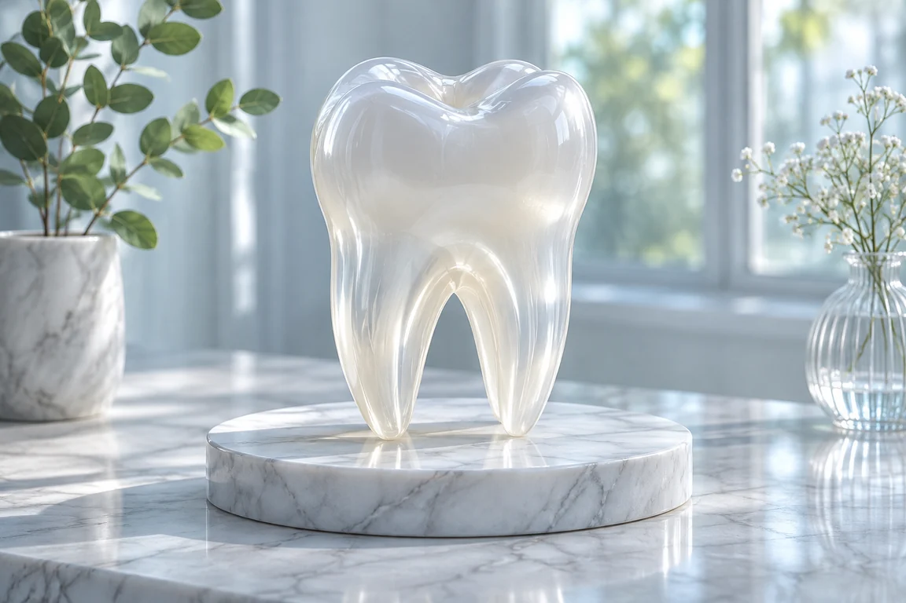
Hakkında
Dt. Burak Yıldız
2017 yılında Atatürk Üniversitesi Diş Hekimliği Fakültesinden mezun olmuştur. Kurumsal poliklinik deneyiminin ardından 2021 yılında Gaziantep Şehitkamil’de kendi muayenehanesini açmıştır.
- 2017Mezuniyet
- 4 YılKurumsal Poliklinik Deneyimi
- 2021Özel Muayenehane
Eğitim ve kariyer bilgileri doğrulandı.
Dijital Diş Hekimliği ve Koruyucu Bakım
Dijital Ölçü
Ağız içinin üç boyutlu kaydı.
İmplant Destekli Protezler
İmplantlardan destek alan protezler.
Koruyucu Diş Hekimliği
Diş ve diş eti sağlığını korumaya yönelik bakım.
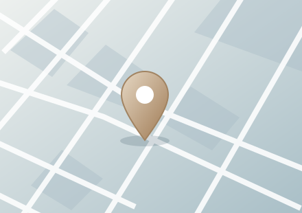
Değirmiçem Mahallesi, Mithat Enç Caddesi No:10/C,
27000 Şehitkamil / Gaziantep